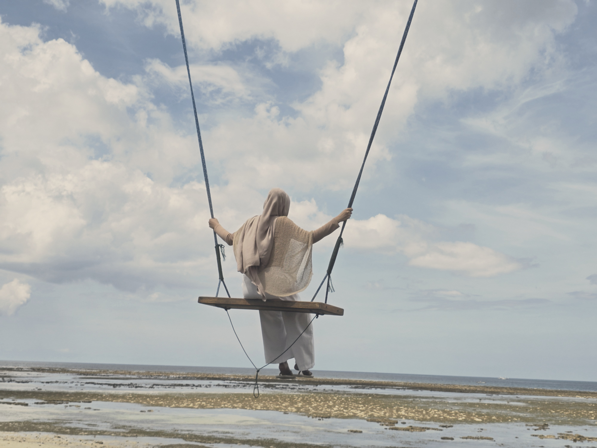
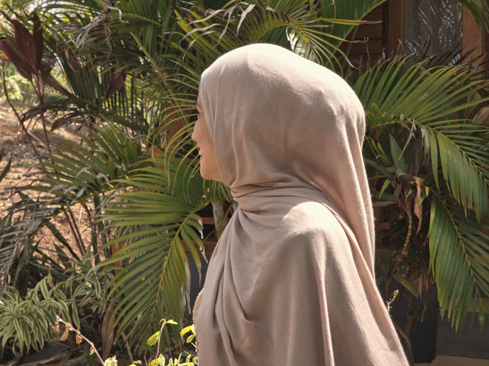
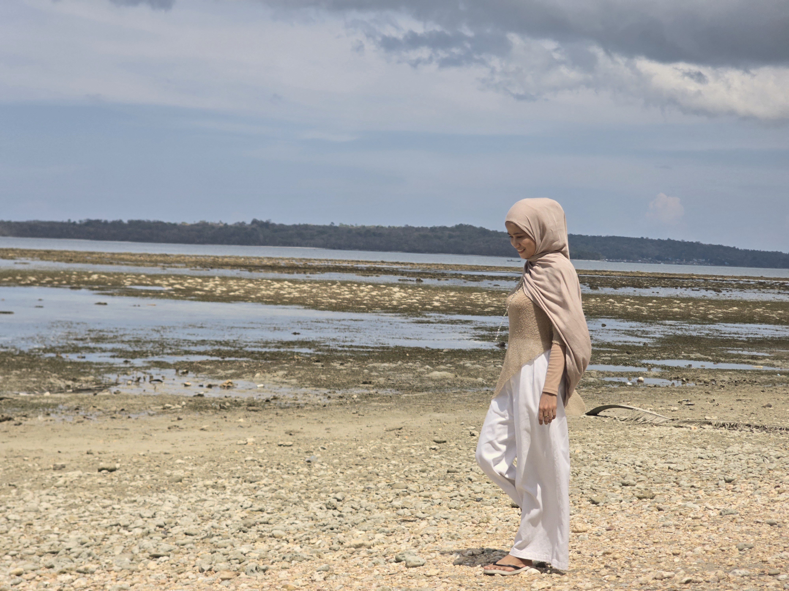
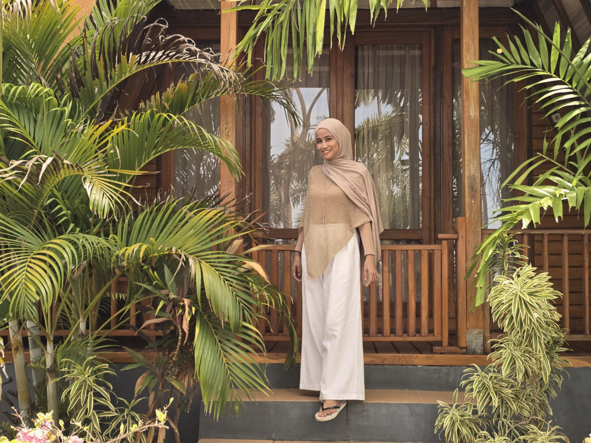
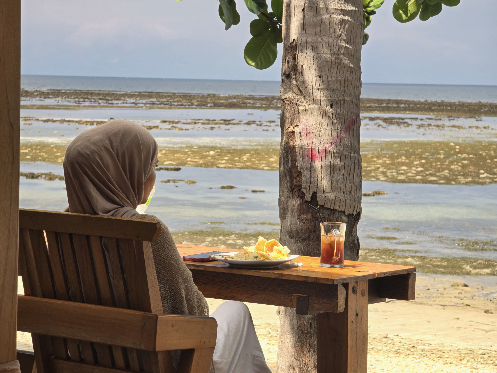

Sebuah cerita · Pantai Sunari
Hari ketika aku belajar menari bersama waktu.

Pagi · Bungalow kayu
Pagi itu aku melangkah keluar,
tanpa rencana apa pun.

Angin laut menyentuh kerudungku,
pelan, seperti mengajak berdansa.
Taman bougenvil
Aku menengadah lebih lama, lalu tersenyum tanpa alasan.

Laut sedang surut
Karang-karang muncul, seperti lantai dansa
yang disiapkan alam.

Siang · Di bawah ketapang
Aku duduk, memesan teh dingin,
dan membiarkan laut bercerita.

Ayunan tepi pantai
Dan di sini, aku akhirnya
ikut menari bersama angin.

pagi yang pelan
teh dingin, laut surutBeberapa tempat hanya dikunjungi.
Sebagian lagi, dikenang.
Catatan kecil dari Selayar
Terima kasih, laut,
sudah mengajakku menari.
Hari ini kusimpan baik-baik,
untuk kuputar ulang saat rindu.
Pantai Sunari · Selayar